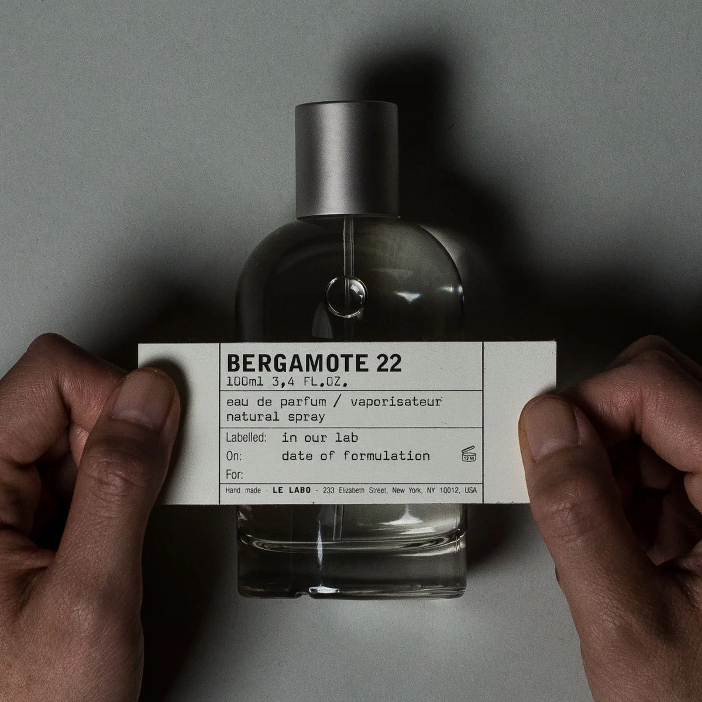

-

-
LELABO BERGAMOTE 22
197.50 €
배송 방법 택배
배송비 무료 배송
신선한, 달콤한, 그리소 센슈얼한 느낌을 모두 담은 시트러스 프레쉬 계열의 향수입니다. 이 놀라운 조합은 이 향수의 원래 코드명이었던 '파이어 코롱(Fire Cologne)'에서 연상할 수 있습니다. 페터그레인의 섬세한 플로럴향, 자몽의 쌉싸래한 향, 앰버와 머스크의 풍성한 달콤한, 그리고 베티머의 남성미 넘치는 터치가 더해져 베르가못 22의 독트한 개성을 완성합니다.
· 탑노트 : 시트러스, 우드, 아로마틱, 프레시 스파이시, 그린
· 하트노트: 앰버, 머스크, 자몽, 베티머, 베르가못, 바닐라, 시더
· 베이스노트 : 페티그레인, 비터오렌지, 머스크, 자몽, 스위트 앰버